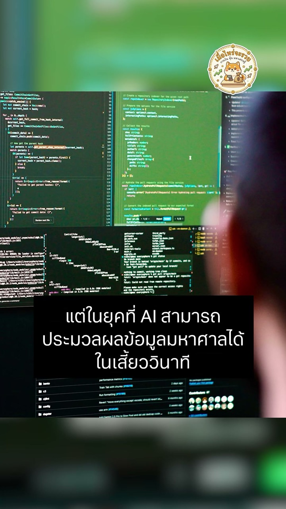
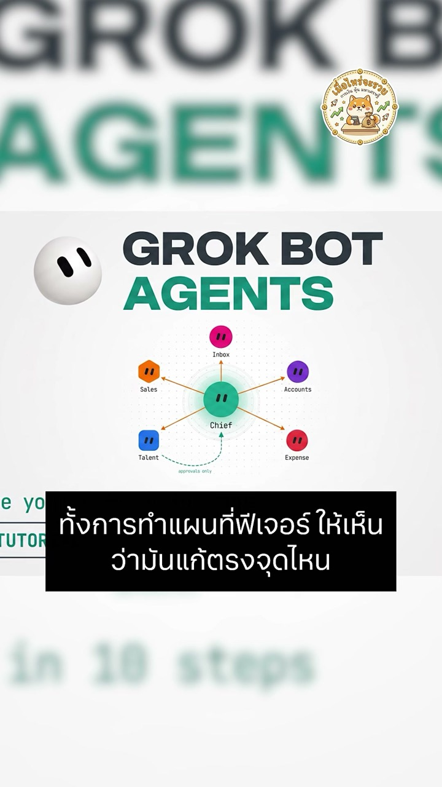

Executive summary
The headline is throughput; the system is about trust
The Reel presents Lauren Tan as a self-taught designer turned software engineer who moved through Netflix, Meta's React team, Cursor, and what is now described publicly as SpaceXAI. It frames her recent work through spectacular numbers: roughly a thousand pull requests in one month, thousands over several months, and a fleet of agents that continues working while she sleeps.
Those numbers are attention-grabbing, but they are not the most transferable part of the story. Tan's public work around pstack emphasizes the opposite of blind volume: investigate before editing, reproduce a defect, make the smallest justified change, verify against the running product, preserve a decision trail, and let an independent reviewer decide whether a change is ready. Parallelism becomes useful only after each worker can produce evidence rather than confident prose.
- Career lesson: a visible trail of work can substitute for a conventional credential path, but only when the artifacts demonstrate real depth.
- Agent lesson: agent quality depends heavily on the environment, tools, skills, and tests surrounding the model.
- Scaling lesson: more agents multiply both output and mistakes; verification must scale before concurrency does.
- Management lesson: the engineer moves from typing every line toward specifying outcomes, constraints, evidence, and release authority.
- Measurement lesson: PR count is activity, not value. Accepted behavior, escaped defects, recovery time, and reviewer effort are stronger metrics.
The Thai narration is a secondary, highly dramatized source. This article uses the Reel to map its argument, then checks the major technical and career claims against Tan's public profiles, React's official release notes, the official pstack repository, and SpaceXAI's Grok Bot material. Where only self-reported throughput is available, it is labeled as such.
Career arc
A non-linear path became a systems advantage
The biographical spine of the Reel is broadly consistent with Tan's older public profiles. She describes herself as formally educated in finance, self-taught in design and programming, and someone whose career crossed design, business, software, and management. EmberConf listed her as a DockYard engineer in 2016 and a Netflix senior engineer in 2017. Her own site later described her as a Netflix engineering manager who returned to hands-on software engineering and joined Meta.
At Meta she worked in the React organization. The official React Compiler 1.0 announcement names Tan among the engineers who rewrote the compiler around a control-flow-graph-based intermediate representation. That matters because it grounds the career story in a concrete technical artifact, not merely a sequence of titles. Her public announcement after leaving Meta says she then joined Cursor and immediately worked on client performance for Cursor 3, teaching agents to use profiling and tracing tools.
The transferable pattern is not “change careers often.” It is to turn every transition into a compounding capability. Design added product taste. Finance added commercial context. Open-source work and conference talks created public evidence. Management added delegation and organizational design. Compiler work added rigor. Those capabilities converge naturally in agent engineering, where the job is partly code, partly product, partly instruction design, and partly quality control.
Portfolio as proof
Learn in public, but leave inspectable artifacts
The Reel says Tan responded to feeling underqualified by learning, building, and explaining what she learned. The exact anecdotes are difficult to reconstruct from the Reel alone, but the public trail is real: blog posts, open-source libraries, conference talks, React contributions, and now an open plugin. This is stronger than “personal branding” because a reader can inspect the work and test whether the explanation survives contact with code.
The operating-model shift
Stop optimizing keystrokes; redesign the work loop
The strongest question in the Reel is not how to type code faster, but how to make a software task independently executable. A coding agent can already generate code quickly. The bottleneck moves to problem definition, access to the right context, runtime feedback, testing, review, and the authority to act. If those pieces stay manual, generation becomes faster while delivery barely improves.
This changes the engineer's unit of work. Instead of a prompt that says “implement this feature,” a useful task contract specifies the desired behavior, non-negotiable constraints, reproduction steps, where evidence comes from, which commands must pass, what the agent may change, and who can merge. The model is one component inside that contract.
pstack
Repeated failure modes become reusable engineering skills
pstack is an open Cursor plugin, not a new model and not a magic
prompt. Its central router, /poteto-mode, selects a
playbook for work such as investigation, bug fixing, performance
analysis, refactoring, evaluation, PR babysitting, or an overnight
autonomous run. Supporting skills encode practices for asking how
a subsystem works, tracing why a decision was made, designing an
architecture, using TDD, reviewing a change, and recording the
agent's work.
The important design move is incremental. When an agent guesses instead of reading code, misses a runtime failure, writes an unhelpful comment, or claims success without proof, that failure is not corrected only in the current chat. It becomes a durable rule, playbook step, check, or verification capability. The organization accumulates operational memory outside any one model session.
Parallelism is safe only after depth. First make one agent capable of producing a small, verifiable change. Then duplicate that trusted loop across tasks. Twenty poorly grounded agents create twenty streams of review debt.
Verification harness
The agent must see and test the product, not merely edit files
A verification harness turns “looks correct” into observable evidence. For a web application, that can mean starting the app, driving the browser, checking accessibility state, reading console errors, taking screenshots, and comparing the result with a named acceptance criterion. For performance work, it can include CPU traces, heap snapshots, before-and-after baselines, and a rule that rejects changes that do not improve the target metric.

Parallel agents
A fleet needs ownership boundaries, not a theatrical org chart
The Reel visualizes a chief agent, manager agents, and specialist agents working in parallel. That can be useful, but the hierarchy itself is not the innovation. A practical fleet needs independent tasks, isolated workspaces, explicit write permissions, a shared source of truth, bounded budgets, and integration rules. Without those controls, an agent “manager” merely adds another language model between the user and the code.

Good parallel work has low coupling: investigate separate hypotheses, test distinct packages, compare alternative designs, or own independent PRs. Coupled changes should remain a linear stack or share a coordinator with an explicit integration plan. The coordinator should route work and resolve dependencies; it should not become an uninspectable super-agent that edits everything.
Measure the outcome
One thousand PRs is a clue, not a quality metric
Tan and official SpaceXAI material publicly report very high PR throughput. Those claims are meaningful evidence that the workflow can move substantial work, but PR count has no stable denominator. A PR may be a one-line dependency update, an investigation artifact, a test, or a major feature. Repository structure, merge policy, automated formatting, and whether stacked changes are split into multiple PRs can change the number dramatically.
A team adopting the method should track accepted outcomes instead: lead time to verified behavior, percentage of changes accepted without rework, escaped-defect rate, reviewer minutes per accepted change, failed-run recovery, rollback rate, cost per accepted outcome, and the fraction of tasks that required human rescue. Throughput is useful only beside quality and intervention data.
Fact check
What the Reel gets right, and what needs qualification
| Claim in the Reel | Assessment | What the evidence supports |
|---|---|---|
| Tan worked at Netflix, Meta, Cursor, and now on Grok Bot. | Verified | Her own profiles, React materials, Cursor announcement, GitHub profile, and SpaceXAI material support this sequence. |
| She helped build React Compiler. | Verified | React's official Compiler 1.0 post names her among the engineers who worked on the compiler rewrite. |
| She created pstack from her agent-engineering practices. | Verified | The official Cursor plugins repository attributes pstack to Lauren Tan and documents its playbooks and verification-first principles. |
| She shipped around 1,000 PRs in one month. | Self-reported | Public interviews repeat this figure; later official SpaceXAI material reports 2,000+ in a month. The claims do not provide an independent quality-adjusted benchmark. |
| SpaceX bought Cursor for $60 billion to obtain its team. | Misleading | Public reporting concerns SpaceX's acquisition of xAI, not an acquisition of Cursor. Tan moved from Cursor to the combined SpaceXAI organization; the Reel appears to merge those events. |
| Elon Musk personally spent heavily to recruit Tan. | Unsubstantiated | The reviewed sources establish her role, not a personal recruitment decision or individual compensation package by Musk. |
| Her system is “20 agents” in a fixed 1–3–16 hierarchy. | Illustrative | SpaceXAI describes multiple bots operating in parallel and bots managing other bots. The exact hierarchy shown in the Reel should be treated as a simplification, not a universal architecture. |
Adoption playbook
Start with one closed loop before adding a fleet
- Choose one repetitive, reversible task. A flaky-test diagnosis, small bug fix, dependency update, or documentation drift check is better than a broad product feature.
- Write the finish condition. Name observable behavior, required checks, forbidden changes, and the evidence the reviewer must receive.
- Give the agent a real environment. It needs the repository, dependencies, test data, product controls, and observability necessary to reproduce the task.
- Capture each failure mode. Turn recurring mistakes into a fixture, lint rule, skill, feature map, or playbook step instead of adding another vague warning to a giant prompt.
- Separate builder and verifier. The agent that made the change should not be the only authority deciding it is correct.
- Measure reviewer effort and escaped defects. More merged changes are not a win when humans spend more time repairing them.
- Parallelize independent work last. Add worktrees, task ownership, budgets, integration order, and a stop policy before increasing concurrency.
Model this as contracts, not personas. A master agent owns routing and integration. A specialist agent owns a bounded outcome. A skill packages reusable procedure and evidence requirements. A tool exposes a controlled capability. The flow defines state, gates, retries, budgets, and human escalation.
My take
The career story and the engineering story share one pattern
The Reel closes by contrasting a head chef with a line cook. That metaphor is useful but incomplete. A strong engineer does not simply stop touching code and issue orders. The work moves upward: designing a kitchen in which tasks are observable, standards are executable, failures teach the system, and no dish leaves because a worker merely said it tasted good.
Tan's career is compelling for the same reason. She repeatedly converted unfamiliar territory into inspectable capability: design into frontend work, frontend work into open-source credibility, management into systems thinking, compiler engineering into rigor, and agent failures into reusable infrastructure. The durable advantage is not being the fastest typist or commanding the most agents. It is building a feedback system that becomes more trustworthy every time it fails.
Reel map
Key moments in the source
Sources
Primary material and verification references
- เมื่อไหร่จะรวย: Lauren Tan Reel — Thai narration, visuals, and argument mapped in this guide.
- Cursor plugins: pstack — official plugin, playbooks, skills, principles, and author attribution.
- Grok Bot for Engineering — official description of multi-bot engineering workflows and self-reported team throughput.
- Introducing Grok Bot — official overview of bots, parallel work, and early internal use.
- React Compiler v1.0 — official account of the compiler and Tan's contribution.
- Lauren Tan's writing — first-person career profile and engineering essays.
- EmberConf 2017 speakers — historical role and public-speaking record.
- Lauren Tan's Meta-to-Cursor announcement — first-person account of her React work and early Cursor 3 performance work.